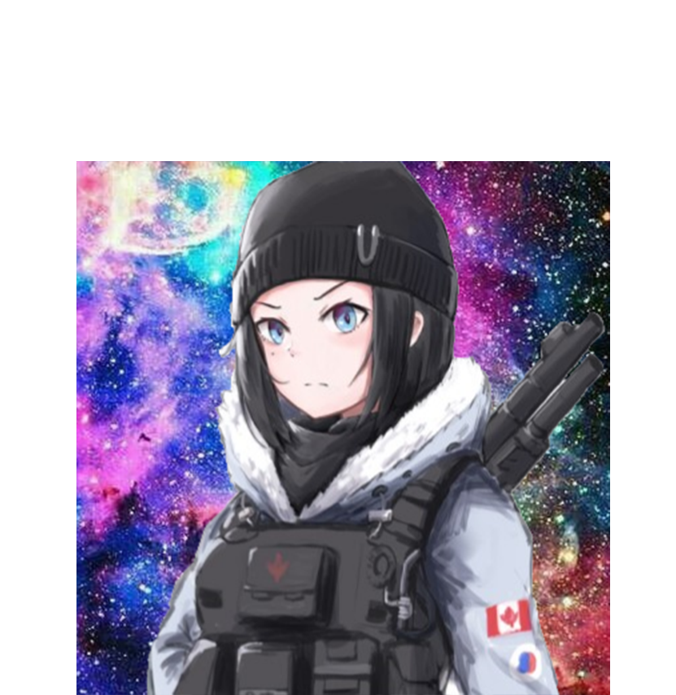

Alo Polisia es un servidor del popular juego Minecraft, su nombre 'Alo Polisia' proviene de un error en la sintaxis de la frase 'Hola, Policia', en un inicio el servidor fue parte de una comunidad de jugadores anarquica, su creador... Saber mas.